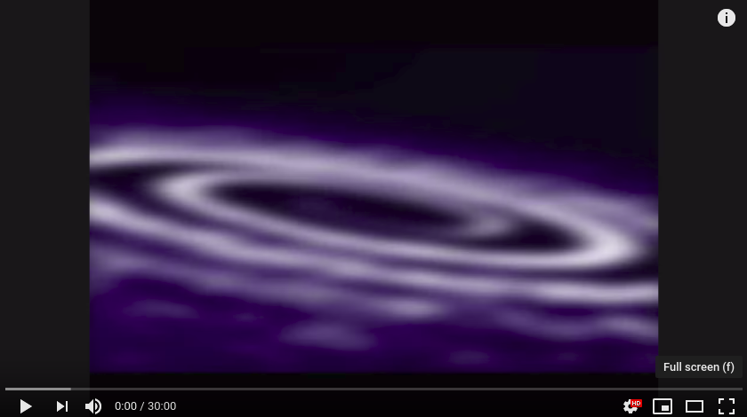

Depression Relieving Music
Music can have a profound impact on our minds and bodies. It is now widely used in medical settings as an intervention for a variety of ways such as natural anxiety relief, depression treatment, etc. in what is known as Music Therapy.
"Music therapy is extremely effective at providing natural anxiety relief and treating depression."
- UHN Daily
Feature
Whether you want to manage stress better, enhance your mood, or lower your depression and anxiety levels, music is the best!
Try one of the suggested music below!!!
Music List
| Youtube Music Videos |
-
Healing Music for Depression Cure - Original Music [HD] 
-
Overcome Depression - Binaural Beats Music to Boost Serotonin, Dopamine and Endorphin, Healing Music 
-
Help Relieve Depression naturally: Deep Relaxation Music & Binaural Beats 1.05 Hz  -
RELAXING MUSIC Anti-Depression, Stress and Anxiety - Deep Regenerating Sleep - Chakras Healing